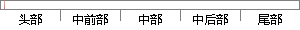

查看我收藏后的别人的歌单。
片段位置图

相似结果|
相似片段 1：的话，这样对方就能在@到我的模块中看到。2．10 查看我的评论：查看别人对自己的评论。2．11 查看我的收藏：查看收藏过的微博。2．12 查看我的微博：查看自己发表过的微博。2．13 查看我的私信
相似片段 2：收藏的微博2.6 转发微博 转发他人发表的微博2.7 评论微博 评论他人微博2.8 回复评论 回复评论2.9 查看@到我的 查看别人 @ 自己的微博（消息）2.10 查看我的评论 查看别人评论自己的微博
相似片段 3：，用户的头像、昵称、所属的圈子、发布内容数、关注、粉丝、设置等基本信息，另外有已发布的歌单乐评、我的圈库（包含收藏的歌单、歌曲、乐评）两个部分，方便用户查看。见图5-7。“正在听”和“我要发布”比较特殊
相似片段 4：出现。但是“红心歌曲”不可以点击播放，只能进行取消红心，查看相关推荐的操作，较鸡肋。(3)“己离线的歌单”与“我的离线歌单"是同一歌单列表，重复出现。(4)“收藏的歌单”与“我的收藏歌单”是同一歌单列表
相似片段 5：其中“主界面”具体呈现了用户关注的好友所发布的歌单/乐评，以及可操作的点赞、评论、收藏、查看等社交功能；并且可切换到“正在听”、“搜索”、“圈圈”、“我要发布”、“我的”这五个模块；“正在听”指的是
相似片段 6：“消息”指的是，别人对我，以及我对别人的歌单/乐评评论、点赞、音乐推荐、关注。“附近”可以查看附近的用户，以及他们的距离、最近听的音乐，并关注感兴趣的用户。“熟人”分为手机通讯录好友、微信好友、微博
相似片段 7：，以后直接点击即可一键访问。一键实时查看听歌流量将本地歌单一键转换为云端歌单对于喜欢在iPhone欣赏QQ音乐的朋友来说，如果通过添加到“我喜欢”、在线收藏等方式实现歌曲的同步，显然是过于麻烦。其实
相似片段 8：中提到我的相关信息；“查看我的粉丝”功能可以查看所有收听我的用户；“查看我的收藏” 功能可以查看所有收藏的微波；“查看我的微博”可以查看所有发表的微博；“查看我的私信”功能可以查看收到的私信；“查看我
相似片段 9：，编辑设置个人信息；点击“发布”查看已发布的帖子，可进行编辑；点击“关注”查看我关注的人，可进行取消关注；点击“粉丝”查看关注我的粉丝，可查看其详情并关注；点击“收藏”查看我收藏的帖子、知识和活动，可对
|
※ 片段修改建议 ※
近似词参考：- 查看：检察
- 收藏：保藏 珍藏
- 别人：他人
系统自动生成语句：检察我保藏后的他人的歌单。
注：本片段修改建议为系统自动生成，仅供参考。